System Settings
Configuring the IP Addresses of Interfaces
Go to System Settings > IP Address to view and configure the IP addresses of the Ethernet and Wi-Fi interfaces. LAN1 can be configured both as a WAN and LAN interface.
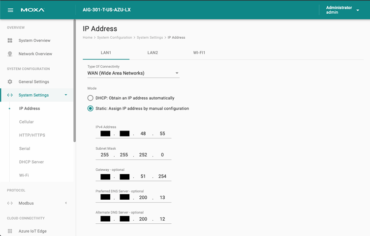
- LAN1 can be a WAN interface with the DHCP client enabled by default.
- LAN2 uses static IP by default:
- IP Address : 192.168.4.127
- Subnet Mask: 255.255.255.0
Configuring Cellular Settings
Go to System Settings > Cellular to view the current cellular settings. You can enable/disable cellular connectivity on your device, create profiles and manage Profile Settings, and enable/disable the connection Keep-alive function to optimize the cellular connection.
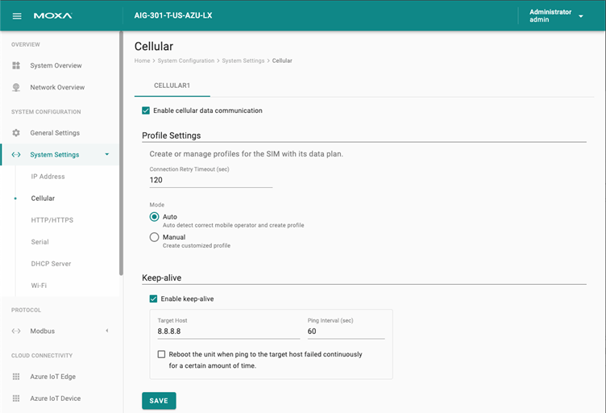
You can create customized cellular profiles by choosing the Manual option in the Profile Settings section. A list of all the profiles in the system is displayed. Create, Edit, or Delete cellular profiles here.
To create a new cellular connection profile, do the following:
- Click + CREATE.
- Specify a unique Profile Name.
- Specify the target SIM card.
- Enter the PIN Code, if your SIM card requires it. NOTE: Three wrong attempts will lock the SIM card.
- Choose a Carrier. (NOTE: This option is displayed only if the cellular module supports carrier switching.)
- Refer to instructions from your cellular carrier to select Static or Dynamic APN and configure the corresponding settings.
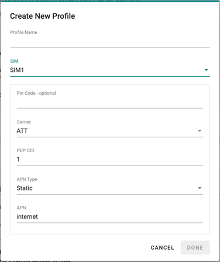
- Click DONE.
- On the Cellular setting page, click SAVE.
When you click SAVE on the Cellular section, the module is restarted to apply the changes. The settings will take effect after the cellular module is successfully initialized.
The Keep-alive function will help you maintain the connection between your device and the carrier service by pinging a specific host on the Internet at periodic intervals.
In some circumstances, a system reboot might bring an unstable or malfunctioning device back to normal state. To enable automatic system reboot, select the Reboot the unit when ping to the target host failed continuously for a certain amount of time option and specify a reboot interval.
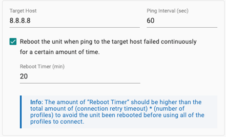
Go to Network Overview > WAN if you want to check the cellular network's connection status afterward.
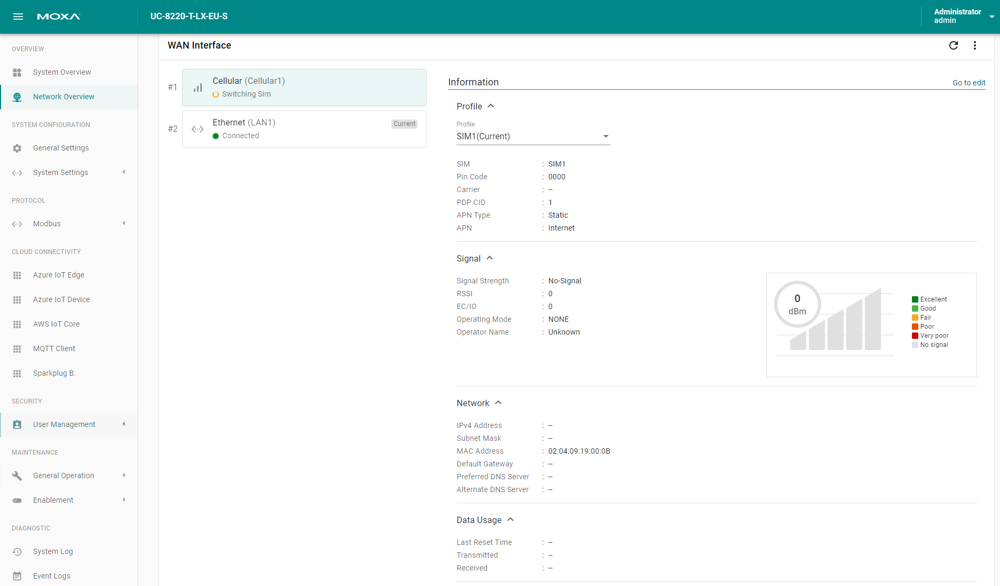
Configuring the HTTP/HTTPS Service
Go to System Settings > HTTP/HTTPS to enable/ disable the HTTP and HTTPS service on ThingsPro Edge for specific ports. The default ports for HTTP and HTTPS are 80 and 8443 respectively.
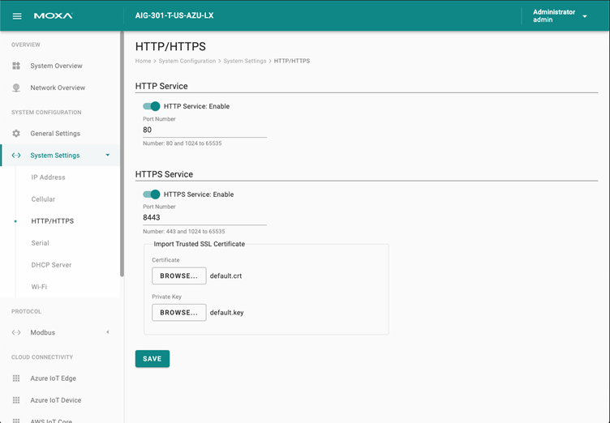
You can import a trusted SSL certificate (with private key) to ensure secure access to ThingsPro Edge.
Configuring Serial Ports
Go to Systems Settings > Serial to view all the serial ports, change the settings, and to clone a serial port.
To change the settings of a serial port, click the icon. You can modify the Baud Rate, Parity, Data Bits, Stop Bits, and Flow Control, or specify an Alias and assign an interface.
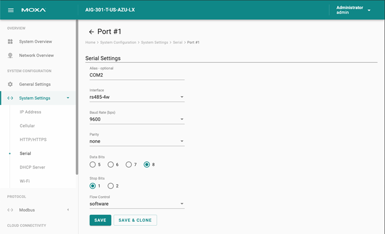
The settings of one serial port can be cloned and applied to other serial ports using SAVE & CLONE.
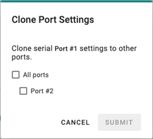
Configuring the DHCP Server
Go to System Settings > DHCP Server to view the DHCP settings. NOTE The DHCP service is only available on LAN and static IP interfaces.
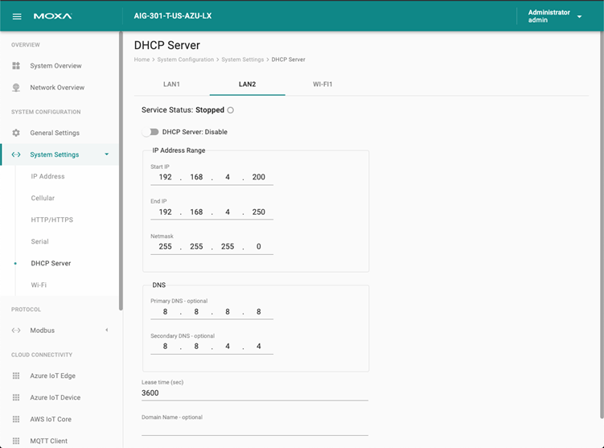
Configuring Wi-Fi
Go to System Settings > Wi-Fi to enable/disable the Wi-Fi interface for Client or AP mode.
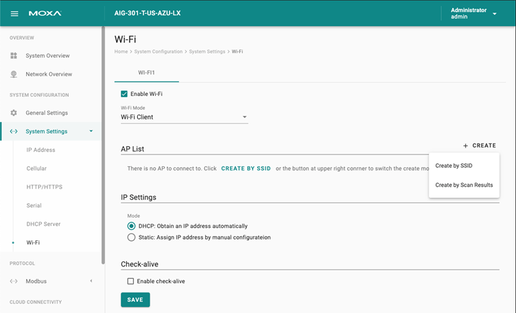
To configure a Wi-Fi client, you need to connect to an access point (AP). To add an AP, click + CREATE and select Create by SSID or Created by Scan Results.
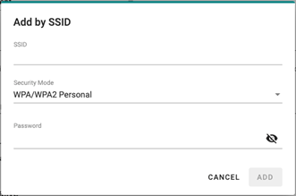 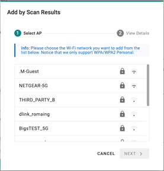
The Check-alive function can be used to ensure Internet connectivity for the development. You can specify a target host and ping interval (sec).
To configure a Wi-Fi AP mode, do the following:
- Specify an SSID. You can also choose to broadcast the SSID.
- Specify a password for the connection.
- Select a Wi-Fi band.
- Select a region and channel.
- Click SAVE.
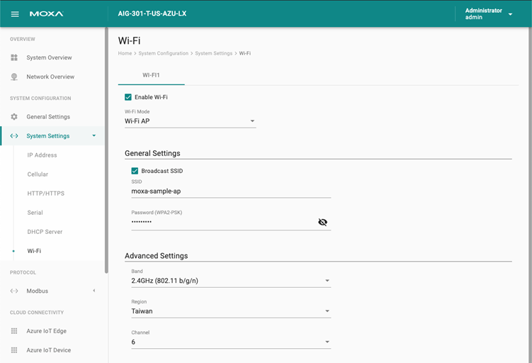
To configure Wi-Fi IP address, go to System Settings > IP Address > Wi-Fi.
To enable DHCP Server service for the Wi-Fi AP mode, go to System Settings > DHCP Server > Wi-Fi.
Go to Network Overview > WAN to check the Wi-Fi network's connection status afterward.